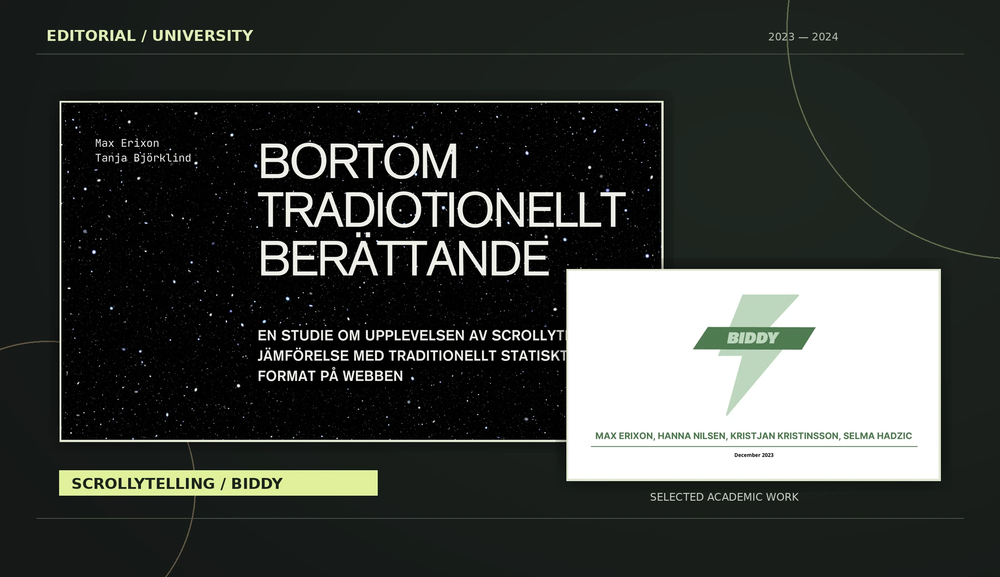
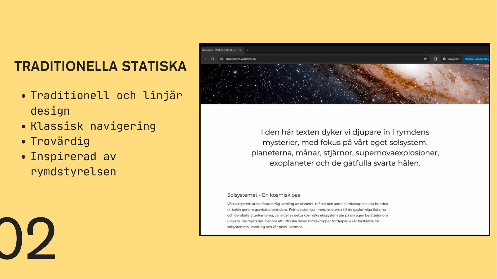
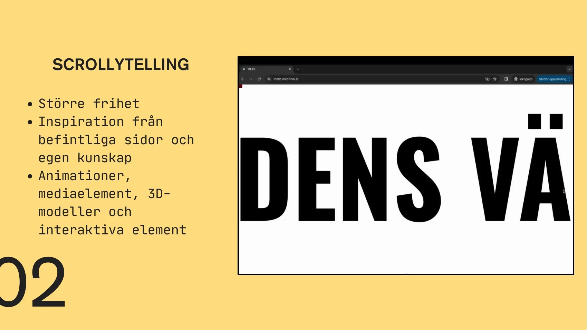

Presentations
University decks, research visuals & a website prototype

Degree thesis: scrollytelling.
A 47-slide thesis presentation comparing a scrollytelling web experience with a conventional static website. The visual system alternates bold typography, space imagery, contrasting backgrounds and research findings to communicate a complex study in a structured way.
Created for the bachelor’s degree project together with Tanja Björklind. The research investigated how presentation format affects user experience, engagement, understanding and information retention. Two website prototypes were developed and compared in an experimental study.
View full thesis presentation 47 slides ↗

Scrollytelling prototype in motion.
A screen recording of the scrollytelling prototype developed for the degree project. Scroll-driven transitions, immersive imagery and animated content illustrate how the interactive website differs from a static page.
Structure, interaction and findings.
A selection from the 47-slide deck. Click any slide for a larger view, or open the full PDF to browse the complete presentation.
Biddy: a university concept.
A 14-slide presentation of a university group project exploring a digital service for spontaneous offers, experiences and more resource-conscious consumption. A restrained palette and recurring visual language guide the viewer through research, audiences, product concept and marketing strategy.
Presented together with Hanna Nilsen, Kristjan Kristinsson and Selma Hadzic. The deck brings multiple subject areas into one consistent visual presentation, from market analysis to business model and marketing plan.
View full Biddy presentation 14 slides ↗Selected Biddy slides.
Examples spanning title design, information hierarchy, concept communication, marketing and presentation layout.
These presentations were collaborative academic projects. They are included as examples of presentation design, structured visual communication and teamwork; they are not claimed as solely individual work.